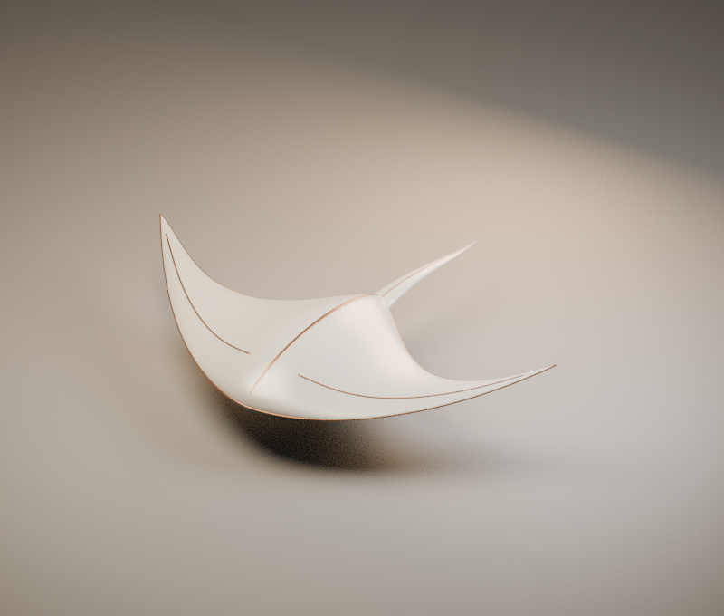

Controlled family · Blender 4.3.2
换一种轮廓，
不换一套审美。
把陶瓷翼壳的构造、材质与摄影棚变成可复用配方。三个几何预设，同一份生成器；可重做、可检查，也有明确不能保证的边界。

BASELINE · 标准陶翼 / 斜视 · Blender 离线渲染，不是实时 WebGL 截图。3 个已测试参数组合
不是整个连续区间的证明
18,668每件三角面
8 个闭合装配对象
4 → 0长尾版非相邻自交对
铜边 .023 → .016，修复后复查
怎样理解“同样的效果”？
一致的瓷白 / 铜线 / 青色背面，固定摄影条件，可读轮廓与质量门槛。不是相同像素，不是任意类别模型的效果保证。仅三个离散配置通过验收；新组合必须重跑几何与多视角检查。
为什么仍然存在装配接触？
铜线嵌入壳体，尾根也是独立装配件。每组接触按允许列表记录，不以“全部穿插归零”掩盖真实结构。不是布尔合并后的可制造连续表面。
失败证据与尚未验证的部分
初版 4 对自交数据 · 初版渲染 · 修复复盘 · 非法输入拒绝测试
尚未验证真实 WebGL 动态闪烁与实体手机；离线 PBR 渲染不等于 Three.js 像素一致。静态 BVH 检查也不覆盖所有近共面深度冲突、隐藏包容或邻接折叠。